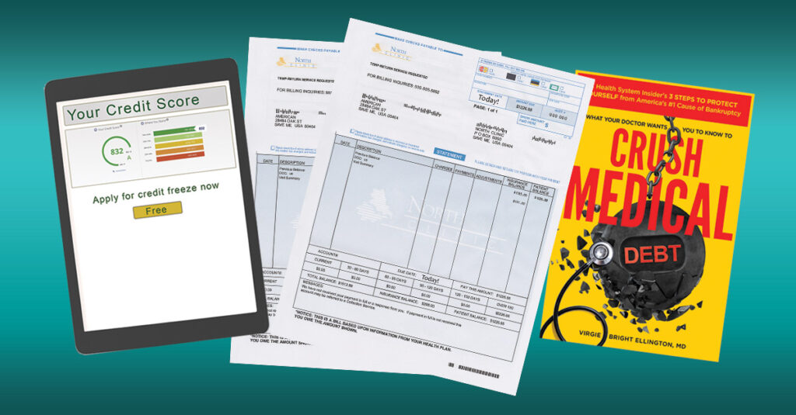

If a medical debt collections agency has contacted you, you’re not alone. One in five households in the United States has overdue medical debt, and the sad fact is that many of those debts are false or in error.
A debt collector may have contacted you. They may tell you to pay or your information will be reported to credit bureaus, hurting your credit score. But, don’t immediately set up a payment plan to get rid of it. Even large bills can be fought, and you can remove medical bills from your credit report.
Medical Debt Collections and Your Credit Report
While it’s good to pay off legitimate unpaid medical debt, often it’s more than you can afford to pay. You may be tempted to put your unpaid medical debt on credit cards–one of the worst things you can do–rather than have a credit bureau get reports of unpaid medical bills.
Special Rules for Medical Debt Collections
Medical collections under $500, medical debt paid in full, or a medical collection less than a year old should no longer appear on your credit reports. However, if you use credit cards or loans to pay your medical bills, you will lose those legal protections. Your medical debt is converted to consumer debt, which carries high interest rates and remains on your credit report for seven years.
Crush Medical Debt advises you to NEVER pay for medical expenses with credit cards, even if they call themselves “medical credit cards” or “care cards”. You can learn more in our article, Before You Put That Medical Bill on a Credit Card, Read This!
So what should you do to keep medical bills off your credit report?
Check Your Credit Reports and Credit Score
This is the first step to financial wellness, even if a collections agency hasn’t contacted you. No matter whether you’re preparing to make a big purchase like a house or a car, or simply want to keep your credit in good standing, you should always be aware of your credit score. Your credit score is calculated using information from your credit report. These determine whether you can get credit, insurance, financing, housing, or even a job, and how much you will have to pay.
Do You Know Your Credit Score (FICO Score)?
Your credit reports are used to calculate your credit score, which creditors use to determine your creditworthiness. The most commonly known credit score is called a FICO score.
Where to get your credit or FICO score:
- Your financial institutions (bank, credit union, credit card companies, or other lenders)
- Nonprofit credit and housing counselors
- Pay for a credit score service, such as myfico.com, which often includes monitoring and other services
By monitoring your credit score and immediately pouncing on potential problems before they can impact your credit permanently.
Examine Your Credit Report
Your credit report is a detailed breakdown of your credit history, such as payment history and the status of your credit accounts. Federal law allows you to get a free credit report each year from the three credit reporting agencies (Equifax, Experian, and TransUnion).
You can request your reports in three ways:
- Visit AnnualCreditReport.com
- Call 1-877-322-8228 (TTY: 1-800-821-7232)
- Fill out the request form and mail it to:
Annual Credit Report Request Service
PO Box 105281
Atlanta, GA 30348-5281
Once you get your report, look it over closely. There may be debts on your credit report that you don’t owe. You will need to dispute these and have them removed.
Look out for:
- Errors and Inaccuracies
- Debt parking
- ID theft
- Medical debts under $500, under a year old, or fully paid off
Examine Your Itemized Medical Bills and Explanation of Benefits
If you discover medical bills on your credit report, the first thing you need to do is to track down the initial itemized medical bill with CPT codes. And this can be hard because transferred debt can be hard to trace. However, because of HIPAA and consumer credit report laws, the provider or healthcare facility where the debt was formed must have records. This means that you must relentlessly hound them to get a copy. Because the billing offices are trained to push back, you may sometimes need to escalate to filing a HIPAA complaint.
CPT codes are medical billing codes that describe every single procedure that happens in a healthcare setting. When you get the itemized bill, examine it to see if it’s correct. In many cases–sadly too many–the medical bills are wrong. They may list procedures that you either didn’t receive or were billed incorrectly. And, when these things are billed incorrectly, the odds are good that the insurance company is not going to pay for them, leaving you to foot the bill.
With the CPT codes, you can turn to ChatGPT or an internet search for the Medicare price of every code. Then, armed with the Medicare price for services rendered and any errors noted, go back to the medical institution and dispute the bill. Either this will result in the medical bill being erased because they made an error, or it will result in the bill being lowered because they overcharged you.
Also, compare your medical bills with your insurance’s Explanation of Benefits statement. You may find errors or charges for things that should have been covered.
Finally, you can negotiate a payment plan or settlement offer, turning unpaid medical debt into paid medical debt.
Dispute Inaccurate Debt Collections on Your Credit Report
Once you know that you’re in the right and have either paid the correct amount, paid an adjusted amount, or are on a payment plan to pay the correct amount, you can approach the credit bureaus to remove the medical debt from your credit score.
To do this, you must dispute the erroneous information following the steps outlined by the Federal Trade Commission (FTC). It includes sending documentation and a written letter to the credit bureaus explaining the inaccurate information that you’re disputing.
This may seem like a daunting task, but credit bureaus deal with this every day, so your case will not be unusual to them. It may take some tenacity and time, but if you have the facts on your side, you’ll be able to get that medical debt removed from your credit report.
Financial Literacy Resources:
Credit Score and Credit Report Resources
- Get your credit report from AnnualCreditReport.com
- Follow these steps to dispute errors on your credit report
- Credit Reports and Scores Resource page from Usa.gov
- Credit Reports and Scores Resource page from the CFPB
Budget and Debt Resources
- FTC’s article, How to Get Out of Debt
- Free budget template
Learn Financial Literacy Basics
- Free Financial Literacy Course from Kahn Academy
ID Theft Resources
- Report ID theft to the FTC
- Learn to minimize risks and mitigate the impact of ID theft through the Identity Theft Resource Center page
Complaints about Debt Collection Agencies
- Submit complaints about debt collection companies to the CFPB, or call (855) 411-CFPB (2372).